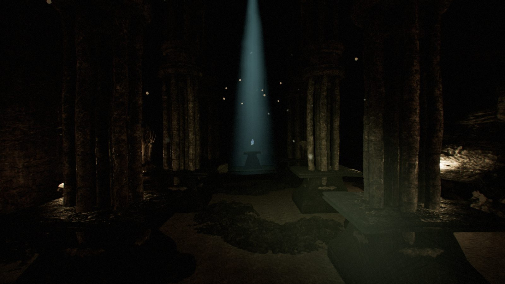
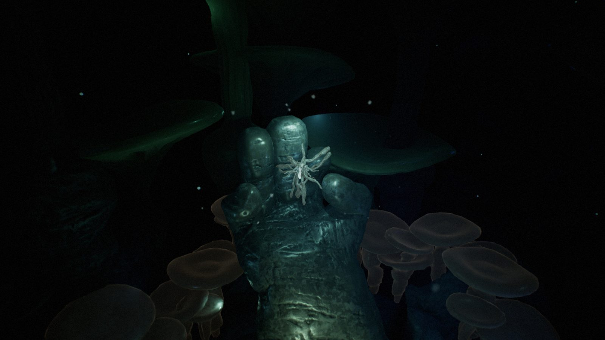
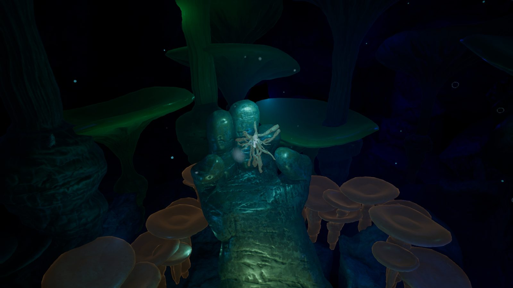

ABYSS
1인칭 수중 호러
PC (Windows)
수심 5,200m
ABYSS는 1인칭 수중 호러 게임입니다. 잠수부가 되어 수심 5,200m에 가라앉은 유적으로 내려갑니다. 산소통 하나로 버틸 수 있는 시간은 3분입니다.
유적의 탑과 동굴, 신전에 유물이 하나씩 있습니다. 세 개를 모두 가운데 제단에 올려놓으면 수문이 열리고, 그 길로 유적을 빠져나갑니다.

빛이 닿는 동안에만
유적 안에 있는 것들은 손전등 빛이 닿는 동안에는 움직이지 못합니다. 빛을 치우면 다가옵니다.
어둡게 찍힌 화면
화면은 어두운 곳에서 카메라로 찍은 영상처럼 보이게 만들었습니다. 센서 노이즈와 렌즈 왜곡을 더하고 색을 뺐습니다. 가운데 선을 밀면 효과를 끈 화면과 비교할 수 있습니다.


효과 끔효과 켬방향이 들리는 소리
보이지 않는 것은 소리로 알아야 합니다. 그래서 헤드폰에서 소리의 방향이 들리도록, 양쪽 귀에 소리가 닿는 시간차와 음색 차이를 계산하는 입체 음향을 직접 만들었습니다.
헤드폰을 쓰고 들어 보세요. 같은 소리가 머리 둘레를 한 바퀴 돕니다.
Unreal Engine 5.8과 C++로 만들었습니다.
처음으로